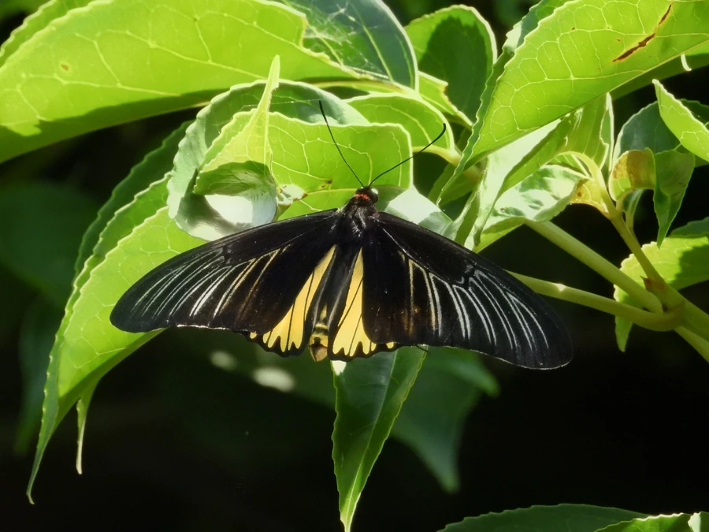

昆虫 · 动物界
荧光裳凤蝶 Troides magellanus

翅展可达十四厘米的大型凤蝶，后翅金黄并在特定角度泛出蓝绿荧光，仅分布于菲律宾群岛，幼虫取食马兜铃属藤本。
- 分类
- 门节肢动物门纲昆虫纲目鳞翅目科凤蝶科属裳凤蝶属
- 栖息环境
- 菲律宾群岛的低地雨林、次生林林缘与溪谷旁
- 地理分布
- 菲律宾群岛，见于吕宋、民都洛、棉兰老等岛屿
- 保护级别
- 列入《濒危野生动植物种国际贸易公约》附录二，商业采集受管制
物种志
荧光裳凤蝶的翅展约十二至十四厘米，是世界体型最大的凤蝶之一。前翅狭长呈黑色，翅脉两侧透出灰白色条纹；后翅金黄色，外缘有一列黑色锯齿状斑纹，翅面在特定角度下会泛出蓝绿色的荧光。这种随视角变化的光泽来自翅鳞的微观结构，而不是色素，昆虫学家称之为有限视角虹彩，只有站在特定方位才能看到。雌蝶体型更大，金斑面积更小，腹部肥硕。
它仅分布于菲律宾群岛，从吕宋到棉兰老岛的低地雨林与次生林都能见到，成虫常在林缘和溪谷边的高处滑翔，喜访花吸蜜，尤其偏爱花蜜丰富的马缨丹等植物。幼虫以马兜铃属藤本植物为食，雌蝶将卵单产于寄主叶背，幼虫孵化后取食叶片，老熟后化蛹于寄主附近的枝条上。它被列入《濒危野生动植物种国际贸易公约》附录二，伐木与商业采集是主要压力。
形态与习性
- 翅展约十二至十四厘米，雌蝶更大
- 翅色前翅黑，后翅金黄，外缘锯齿轮黑斑
- 荧光特定角度泛蓝绿光泽，源于翅鳞结构而非色素
- 食性幼虫取食马兜铃属藤本叶片
- 分布仅见于菲律宾群岛的低地雨林
- 保护列入国际公约附录二，采集需许可
趣味知识
- 它的蓝绿光泽只在特定角度出现，换个方向看就只剩金黄，这种现象被称为有限视角虹彩。
- 荧光裳凤蝶是菲律宾群岛的特产，离开那片雨林就找不到野生种群。
- 雌蝶产卵极为挑剔，只在马兜铃藤蔓的嫩叶背面单产，一株寄主上往往只有一两粒卵。